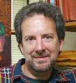
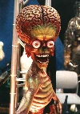

De entrada, el joven europeo había proclamado su ateísmo aunque charlaba exuberantemente sobre sus dioses. Con fervor incauto en la mirada, su voz describía una experiencia de esas que llaman transformadoras; tímidamente repetía: “tan sólo de recordarlo tiemblo de la emoción”.

El muchacho adora alienígenas. Está seguro (pues lo “ha visto”) de que vida inteligente de origen extraterrestre nos visita con asidua regularidad y esta visión, curiosamente, no lo perturba; para él son buenas noticias. Lo escucho mientras habla con un grupo de compañeros de primer año en la Universidad de California en San Diego (UCSD) y no consigo notar la diferencia entre él y un devoto; más aún, conozco religiosos con mucho menos entusiasmo del que exhibía tan campantemente aquel lozano escandinavo. Aunque había comentado no seguir ninguna religión ni creer en dioses, al escuchar la emotiva ilustración de su experiencia, tan extraordinaria como subjetiva, me era imposible no enfundarlo en la sección de creyentes. Todos los signos y síntomas estaban allí.
Aparentemente, el deseo de no estar solos en el Universo ha calado con penetrante eficacia en la psiquis humana, adoptando en el proceso una cantidad variada de eufemismos. No obstante, la idea principal se conserva cabalmente: es esencial creer en algo (no importa qué) que nos cuide, nos guíe, siembre esperanza en el futuro y nos proporcione esa ambigua impresión de que no estaremos solos ni cuando estemos muertos. Sobre el planeta observo miles de millones de homo sapiens que actualmente creen en distintas historias basadas en lo sobrenatural, donde la fe sustituye la evidencia material.
Precisamente, en su libro El descenso del hombre, Charles Darwin subraya que “una creencia en todo tipo de agentes espirituales parece ser universal”; y ahora, doscientos años después de su nacimiento, científicos en distintas áreas aún estudian el origen de esta característica humana y las causas de que ese deseo de creer haya permanecido con nuestra especie a través de los milenios.
Porque, aparentemente, no parece ofrecer condiciones efectivas para la supervivencia.
“Una creencia religiosa requiere que tomemos lo que es materialmente falso por verdadero y lo materialmente verdadero por falso”, escribió en el libro En dioses confiamos: el paisaje evolucionario de la religión, Scott Atran, antropólogo del Centro Nacional para la Investigación Científica en París y quien fuera entrevistado recientemente por Robin Marantz Henig para la revista dominical del diario The New York Times. Atran no puede ver la religión como un proceso adaptativo porque no observa sus beneficios a la supervivencia del individuo. “Los creyentes piensan que cuando una persona muere, aún cuando el cuerpo ya se ha descompuesto y desaparecido, este individuo continúa llorando, riendo, sintiendo las cosas como si estuviese todavía vivo. Imagine usted cómo le iría a un animal que confunda lo vivo con lo muerto”. Para él, es altamente improbable que la mutación genética para esa característica sobreviviera.
Atran no está solo en su búsqueda por los procesos evolutivos detrás de la conducta y la cognición humanas. De hecho, una característica primordial de la investigación científica que no me canso de recalcar es esa obligatoria capacidad de reinventarse y redescubrirse que teñiría de verde envidia a la mismísima Madonna.
Siglo y medio desde la publicación de El origen de las especies y la ciencia de la evolución está más robusta que nunca. Nuevos estudios han enriquecido el pensamiento de Darwin, integrándolo al conocimiento en ramas como la genética y la biotecnología. Y otros cerebros brillantes han desarrollado un cuerpo científico sólido basado en la biología evolutiva detrás, no sólo de conductas y pensamientos, sino también de la cultura humana. Stephen Jay Gould, paleontólogo, autor, un poco comediante, gran observador de la naturaleza humana y fallecido a destiempo en el 2002, fue uno de ellos. Junto al genetista Richard Lewontin formularon una teoría que explica la evolución de muchas conductas humanas como resultados secundarios de procesos primarios.
Uno de los problemas que enfrento cuando intento escribir sobre este proceso de desarrollo de la vida sobre la Tierra, es el de evitar sugerir que las herramientas evolutivas y cada transformación en la naturaleza poseen una “razón de ser”, ya que no es así. Los objetivos son sobrevivir y reproducir y el mecanismo principal es valerse de todo a su alrededor para lograrlo. Y es precisamente esa crudeza, ese sin sentido, lo que la hace tan espectacular ante mis ojos.
Propagar los conceptos de la evolución ofrece además el problema de lo establecido; algunas ideas de Darwin, que también han evolucionado con el tiempo, han quedado erróneamente plasmadas en la mente humana (no ayuda que sea la teoría menos aceptada por vincular al hombre a los demás animales y desligarlo de su origen sobrenatural), pensamientos que ya han sido transformados por novedosos descubrimientos en más de un siglo de investigación.
En ese sentido, Gould y Lewontin explicaron que no todas las características animales han nacido de un proceso adaptativo sino que hay algunas que son subproductos de otros desarrollos. Un ejemplo que es probable hayan leído antes es el del color rojo de la sangre. Esta condición no posee ninguna función de valor en la naturaleza, es un remanente del hecho de desarrollar hemoglobina. Gould y Lewontin llamaron a estos subproductos enjutas. Tomaron el término de la arquitectura, donde se utiliza para designar el espacio entre dos arcos y la superficie horizontal sobre ellos. Este espacio accidental ha surgido como el subproducto inevitable del uso de arcos y rectas. De la misma forma, los organismos portan enjutas donde rasgos nacen como un efecto colateral de otro cambio, pero que luego acaban siendo útiles. Por ejemplo, escribe Marantz Henig en el Times, los espacios debajo de las escaleras no poseen ninguna función en sí mismos, sin embargo, si construimos un armario allí, transformamos lo accidental en funcional.
“La selección natural hizo grande al cerebro humano pero la mayoría de nuestros potenciales y propiedades mentales puede que sean enjutas, es decir, consecuencias no adaptativas que surgieron al construir un aparato con una estructura tan compleja”, escribió Gould.
En la actualidad, muchos estudiosos de la evolución piensan que las religiones y las creencias en lo sobrenatural y lo extraordinario son enjutas evolutivas. Subproductos que nacieron de procesos varios más importantes y que han tomado modificadas funciones debido a influencias culturales. Por mucho tiempo pensé que Dios había surgido como una forma de llenar los agujeros y las lagunas que la ciencia aún no había podido explicar, sin embargo, estudios de la neurología y de la evolución de la cognición y la conducta humana han cambiado mi opinión al respecto. Creo que lo de llenar agujeros es sólo el armario erigido, su origen es posible que esté vinculado a procesos mucho más importantes y vitales para la supervivencia.
En el artículo de Marantz Henig, Atran utiliza un buen ejemplo para explicar el fenómeno de atribuirle orígenes adaptativos erróneos a conductas y pensamientos humanos: los senos femeninos.
“El desarrollo de estas glándulas mamarias está vinculado a las hormonas femeninas, por lo tanto, los senos llenos señalan fertilidad y el desarrollo de la preferencia por ellos en el cerebro masculino es una buena estrategia evolutiva de apareamiento. Sin embargo, los senos femeninos son utilizados hoy en un sinnúmero de cosas, para la venta de desodorantes hasta cervezas. Si un marciano antropólogo nos visitara asumiría que los senos realmente evolucionaron para vender productos a la humanidad. Este mismo error lo cometemos con la religión al asumir que evolucionó para crear alianzas, tapar agujeros o hacernos sentir mejor sobre la muerte”.
Al joven escandinavo en Estados Unidos le encantaría hablar con el marciano antropólogo imaginario de Atran, o cualquier otro alienígena, y está seguro de que algún día su deseo se hará realidad. “Mi experiencia es verdadera y sé que esto ocurrirá antes de que muera”, comentó con la mirada rebosante de descomunales entelequias.
Yo desearía reunir a Darwin y a Gould en una mesa y escucharlos conversar. Pero no alojo ilusión alguna al respecto, me he dedicado a construir un funcional librero secular en ciertas enjutas neuronales de mi cerebro con el objetivo de mantener mi confianza lo más cercana a las evidencias como me sea posible.
El clóset debajo de la escalera
La tragedia de la cognición humana
Para los que favorecen una filosofía adaptacionista al origen de la religión, la muerte es una explicación. Primero, porque lo que ocurre después de la muerte se encuentra en el centro de casi todas, sino todas, las creencias; y segundo porque, aparentemente, la religión posee la función de ayudarnos a lidiar con la muerte de los que más amamos y nos brinda la idea de un más allá donde volveremos a ver a todos aquellos que hemos perdido; también ofrece significado a la breve vida que disfrutamos sobre el planeta. Ideas que prometen consuelo ante el vacío emocional que provoca la noción de la no existencia.
Marantz Henig asegura en el artículo que para los que piensan que las religiones son un subproducto, la consolación no es prueba suficiente de que esta característica haya ofrecido una ventaja adaptativa a nuestros ancestros. En el artículo cita a Pascal Boyer, otro autor que se decanta por la teoría de las enjutas. Boyer manifiesta en su libro, La religión explicada, que “la mente humana no produce ilusiones reconfortantes y adecuadas para cada situación de estrés o de miedo. De hecho, cualquier organismo que tienda a crear estas ilusiones no sobreviviría por mucho tiempo”.
No obstante, otro argumento adaptacionista sugiere que aunque la religión no parezca tener ningún valor para la supervivencia ahora, pudo haber beneficiado de alguna forma a nuestros ancestros y que esta ayuda pudo haber fortalecido al individuo a través del grupo. La religión, es bien sabido, promueve la unión, la compasión y la cooperación entre sus miembros, de esta forma, los religiosos consiguen fortalecerse mediante estrategias comunitarias que brindan ventajas para los individuos que pertenezcan a ellas. Es la idea de la selección grupal, donde el conjunto se convierte en el organismo que evoluciona.
Las discusiones sobre el tema no creo acaben pronto, Atran opina lo mismo de la religión. “Con la teoría del Dios de las lagunas (God of the Gaps), parecería que el descubrimiento científico erradicaría la necesidad de la religión cuando todo haya sido explicado, pero no es así. Existe una necesidad fuerte de llenar estos espacios con creencias sobrenaturales y esa necesidad está enlazada a elementos adaptativos que ya han sido explicados por distintas propuestas dentro de la evolución de la cognición”.
De hecho, es hasta perfectamente posible que una persona tenga las mismas ideas que yo sobre la evolución de las creencias y aún así no sea ateo. De alguna forma, nuestros cerebros han convertido ciertos requisitos primarios de creer, en un clóset debajo de la escalera del que muchos no pueden (ni quieren) salir. Atran lo ha denominado, “la tragedia de la cognición humana”.
Parte de la información para esta columna la extraje del artículo en la revista dominical del diario The New York Times de la autoría de Robin Marantz Henig: http://www.nytimes.com/2007/03/04/magazine/04evolution.t.html?_r=1&scp=1&sq=darwin%27s%20god&st=cse
Volver al índice de la Lupa Herética
© 2008-2025 Glenys Álvarez y Sin Dioses. Prohibida la reproducción con fines comerciales.
Comentarios
Comments powered by Disqus